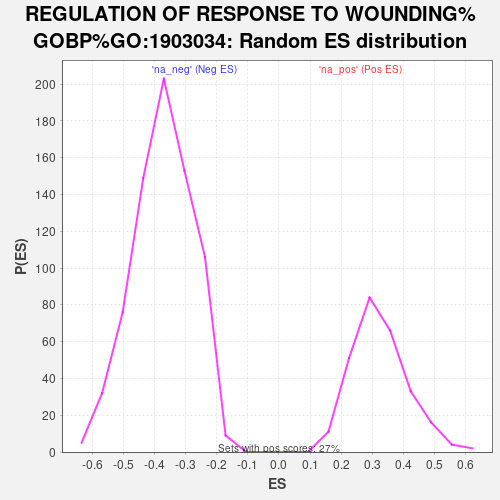

| | | Dataset | TNBC_vs_Healthy_ranks |
| Phenotype | NoPhenotypeAvailable |
| Upregulated in class | na_pos |
| GeneSet | REGULATION OF RESPONSE TO WOUNDING%GOBP%GO:1903034 |
| Enrichment Score (ES) | 0.73702353 |
| Normalized Enrichment Score (NES) | 2.2695637 |
| Nominal p-value | 0.0 |
| FDR q-value | 7.579641E-4 |
| FWER p-Value | 0.003 |
Table: GSEA Results Summary
 Fig 1: Enrichment plot: REGULATION OF RESPONSE TO WOUNDING%GOBP%GO:1903034
Fig 1: Enrichment plot: REGULATION OF RESPONSE TO WOUNDING%GOBP%GO:1903034
Profile of the Running ES Score & Positions of GeneSet Members on the Rank Ordered List

Fig 2: REGULATION OF RESPONSE TO WOUNDING%GOBP%GO:1903034: Random ES distribution
Gene set null distribution of ES for REGULATION OF RESPONSE TO WOUNDING%GOBP%GO:1903034